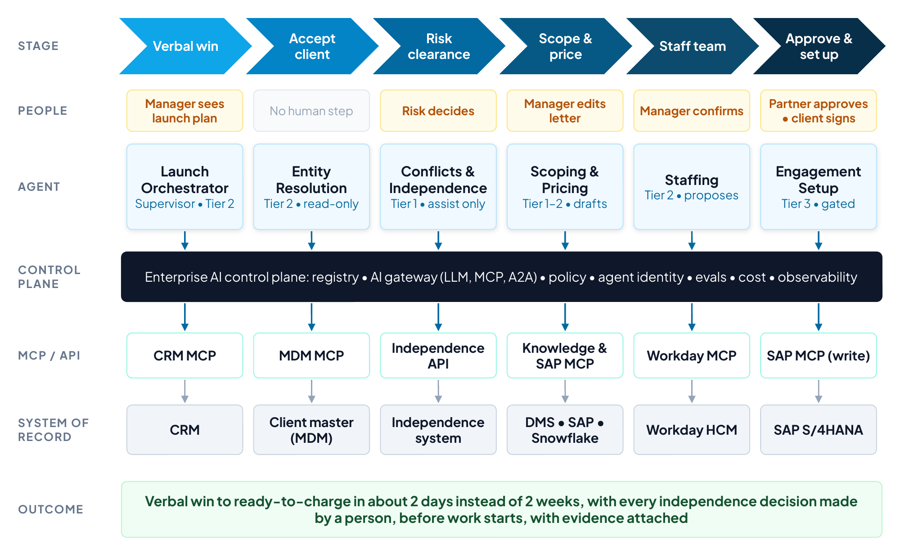
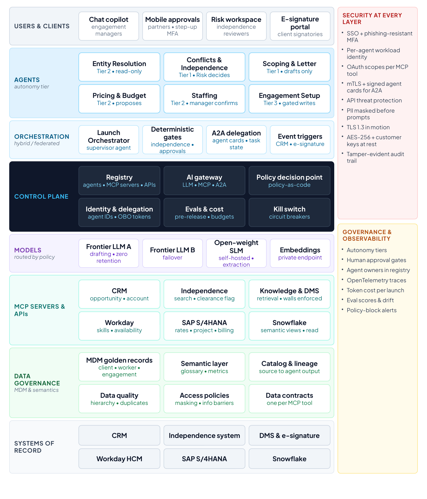
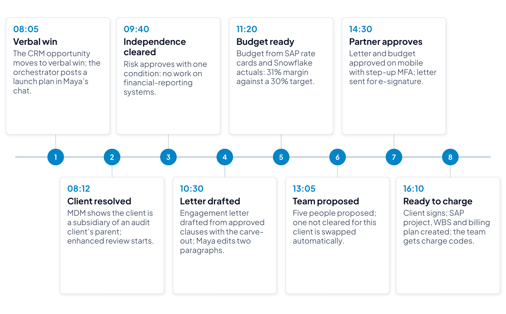
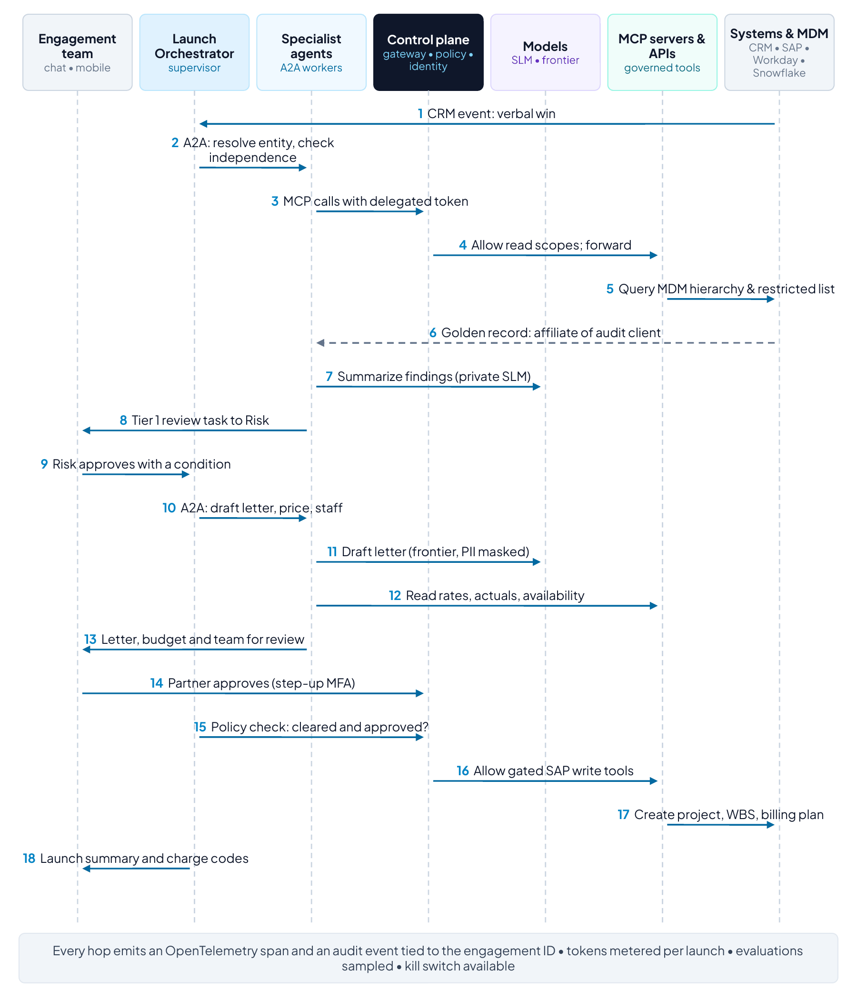
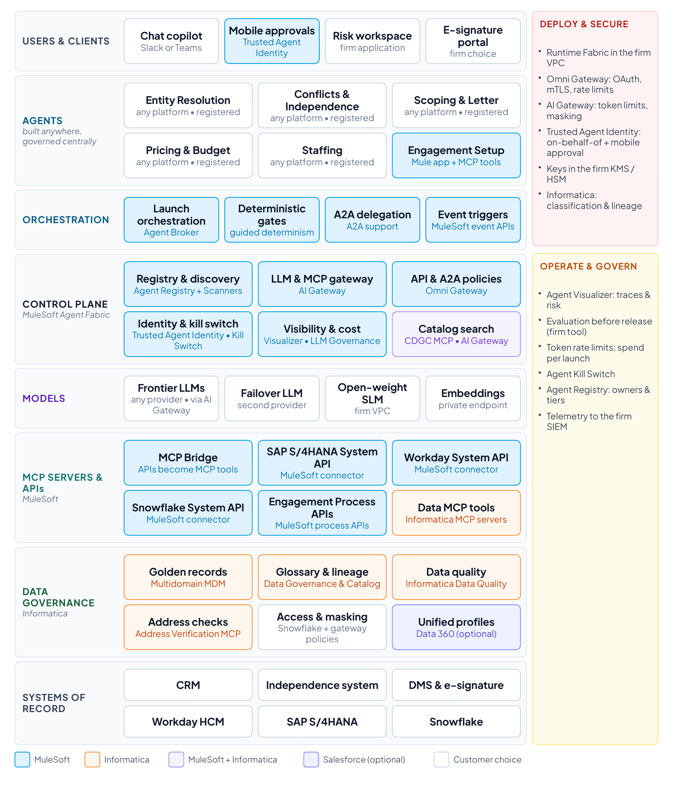

Section 11
Reference use case 1: Professional services engagement launch
This reference use case applies the control-plane architecture to one of the most frequent, compliance-sensitive processes in a global audit, tax and advisory firm: accepting and launching a new client engagement. The architecture and discussion are vendor-neutral except for the transactional systems the process runs on: a CRM, SAP S/4HANA for projects and billing, Workday for people and skills, and Snowflake for analytics. The final subsection shows one way to realize the design with MuleSoft Agent Fabric and Informatica.
Overview
Large professional services firms launch thousands of engagements a year. Between a verbal win and the first chargeable hour sits a chain of manual, risk-sensitive steps: resolving exactly which legal entity the client is, checking conflicts of interest and auditor independence, drafting the engagement letter, building the budget, staffing the team, and creating the project, work breakdown structure (WBS) and billing plan in the ERP system. Each step lives in a different system and is owned by a different function, so the chain commonly takes days to weeks. The delays have direct costs. People wait on the bench, work starts before charge codes exist and goes unbilled, and a missed affiliate relationship can become an independence breach with regulatory consequences when the client, or its parent, is an audit client.89
In the target state, an Engagement Launch Orchestrator coordinates six specialist agents across these systems. People keep every judgment that carries professional or regulatory accountability: independence decisions, engagement terms and partner approval. Agents do the assembly, checking, drafting and system updates, and the control plane makes every step governed, observable and auditable.
- Trigger: an opportunity reaches verbal win in the CRM.
- End state: independence cleared and documented, engagement letter signed, team soft-booked, and the SAP project, WBS, billing plan and charge codes active.
- Users: engagement managers and partners, Risk & Quality (independence reviewers), resource management and finance.
- Out of scope: delivery of the engagement itself and invoicing after launch.

Business case and expected outcomes
The value comes from compressing cycle time, removing manual assembly work and preventing compliance failures. The figures below are illustrative for a firm launching 10,000 engagements a year; replace them with the firm’s own baseline during discovery.
| Value lever | How the solution delivers it | Illustrative annual value |
|---|---|---|
| Capacity released | Manual assembly, checking and data entry falls from about 14 to 5 hours per launch across managers, Risk, resourcing and finance | 10,000 launches × 9 hours × $120 loaded cost ≈ $10.8M |
| Revenue protected | Charge codes exist when work starts, so early hours are billed instead of written off | 2,500 affected launches × 20 hours × $200 average rate ≈ $10.0M |
| Utilization | Teams are confirmed within days instead of weeks, reducing bench time | 0.5 point × 5,000 client-facing staff × 1,800 hours × $200 ≈ $9.0M |
| Risk avoided | Every independence decision is made by a person before work starts, with evidence and lineage attached | Avoided remediation, regulatory and reputational cost; not quantified |
On these assumptions the program releases or protects roughly $30 million a year before platform, model and change costs, which should be estimated alongside the baseline. Expected business outcomes:
- Faster time to revenue: verbal win to ready-to-charge in about two business days.
- Lower cost to launch, with Risk, resourcing and finance working exceptions rather than re-keying data.
- No known independence exceptions at engagement start, with a complete evidence trail for inspections.
- A better client experience (engagement letter the same day) and a better staff experience (clear assignments, fewer chasers).
Key performance indicators
Baselines below are illustrative and should be measured during discovery.
| KPI | Definition | Baseline (illustrative) | Target (12 months) |
|---|---|---|---|
| Win-to-ready-to-charge | Business days from verbal win to active charge codes | 10 days | 2 days |
| Manual effort per launch | Hours across all roles to launch one engagement | 14 hours | 5 hours |
| Independence cleared before start | Share of engagements cleared before any work begins | 92% | 100% |
| Post-start independence exceptions | Exceptions found after work begins, per 1,000 engagements | 4 | Below 0.5 |
| First-time-right setup | SAP projects created without later correction | 80% | 97% |
| Staffing within 48 hours | Roles confirmed within 48 hours of verbal win | 55% | 85% |
| Agent quality | Evaluation pass rate for letters and independence summaries | Not measured | 95% or higher |
| Governed AI traffic | Share of model and tool calls through the AI gateway | Not measured | 100% |
| AI cost per launch | Model and platform cost per engagement launched | Not measured | Within target |
Solution architecture
The architecture follows the five-layer reference architecture in Section 6, expanded to show the orchestration model, the MCP and A2A paths, the data-governance layer and the security controls that apply at every layer (Figure 9).

Clients and channels
Engagement managers work in a chat copilot inside the firm’s collaboration tool; partners approve on mobile with step-up authentication; independence reviewers work in their case workspace; clients sign in an e-signature portal. No user talks to a model directly: every request enters through the orchestrator and the control plane.
Agents and autonomy tiers
| Agent | Responsibility | MCP tools | Tier | Human role |
|---|---|---|---|---|
| Launch Orchestrator | Plans and tracks the launch; delegates tasks over A2A; enforces the regulated sequence | Registry lookup; task state | Tier 2 | Sees plan and status |
| Entity Resolution | Matches the client to its MDM golden record; returns hierarchy and identifiers | resolve_entity; get_hierarchy | Tier 2, read-only | None |
| Conflicts & Independence | Runs conflict and independence searches; assembles findings and precedent | search_restricted; check_services; get_relationships | Tier 1 | Risk decides |
| Scoping & Letter | Drafts scope and engagement letter from approved templates and clauses | search_knowledge; get_template; create_document | Tier 1 | Manager edits; partner approves |
| Pricing & Budget | Builds the budget from rate cards and historical actuals; checks margin | get_rate_card; query_actuals | Tier 2 | Manager accepts |
| Staffing | Proposes a team by skills, availability, location and independence clearance | find_available_staff; get_clearance_flag | Tier 2 | Manager confirms |
| Engagement Setup | Creates project, WBS, billing plan and charge codes | create_project; create_wbs; create_billing_plan | Tier 3, policy-gated | None; gated by policy |
Orchestration model selected
The firm uses the hybrid/federated pattern. The control plane centrally governs identity, policy, cost and audit, while each function owns its agents: Risk & Quality owns the Conflicts & Independence agent and its rules, Finance owns Engagement Setup, and Talent owns Staffing. Within a launch, a supervisor pattern applies: the orchestrator decomposes the launch into tasks and delegates them to specialist agents over A2A,27 while agents reach tools and data only through MCP servers.26 The regulated sequence is deterministic rather than left to model reasoning: no letter is sent before independence is cleared, and nothing is written to SAP before the partner and the client have approved. Model reasoning is used inside steps (resolving, summarizing, drafting, matching), never to skip a gate.
Models and routing
- Frontier model (primary): hosted under enterprise terms with zero data retention; drafts engagement letters and summarizes complex findings. A second frontier provider is configured for failover.
- Open-weight small language model: self-hosted in the firm’s virtual private cloud for entity extraction, classification and personal-data detection, so client-confidential text never leaves the firm for routine tasks.
- Embedding model: on a private endpoint to index credentials, prior proposals and templates for retrieval.
- Routing policy in the AI gateway: client-confidential payloads go only to private models or approved regions; drafting goes to the frontier model with personal data masked; token budgets are set per launch.
Control plane and policy
The control plane provides the registry of agents, MCP servers and APIs, each with an owner and an autonomy tier; an AI gateway that mediates all LLM, MCP and A2A traffic; a policy decision point that evaluates policy-as-code; identity services that issue per-agent workload identities and delegated, on-behalf-of tokens; evaluation, cost and observability services; and a kill switch with circuit breakers. Representative policies:
- Engagement setup in SAP requires independence status CLEARED, partner approval and a signed letter. The partner’s approval is bound to the exact setup request and expires at the end of the business day.
- Engagement letters use approved templates; any clause deviation routes to Risk & Quality.
- Staffing proposals include only people with independence clearance for the client and the required credentials.
- Client-confidential data is processed only by private models in approved regions.
MCP servers, APIs and systems of record
Each system of record is wrapped by governed APIs and exposed to agents as MCP tools with explicit read or write scopes: the CRM (opportunity and account), the independence and conflicts system (searches and a clearance flag), document management and e-signature, Workday (skills, certifications, availability), SAP S/4HANA (rate cards, projects, WBS, billing plans) and Snowflake (historical engagement economics through governed semantic views, read-only).
Data governance: MDM and semantics
Independence and conflict checks are only as good as the entity data behind them; a missed subsidiary is a missed conflict. Master data management therefore sits on the critical path:
- Client and legal-entity master: one golden record per legal entity with the full corporate hierarchy (ultimate parent, affiliates, subsidiaries), identifiers such as the LEI and tax IDs, and links to the restricted-entity list.
- Worker master: Workday remains the system of record; MDM cross-references worker identifiers across the CRM, SAP and the independence system.
- Engagement master: one engagement ID shared by the CRM opportunity, the independence case, the engagement letter and the SAP project.
- Reference data: service catalog, service lines, industries and rate cards, with effective dates.
A semantic layer gives agents and analytics the same meaning for the same words: a business glossary (client, affiliate, audit client, restricted entity, engagement, realization, utilization), shared metric definitions, and a data contract for each MCP tool (schema, meaning and quality thresholds). A catalog records lineage from source to agent output, so a reviewer can see which records drove an independence finding. Data-quality rules watch hierarchy freshness, duplicate entities and missing identifiers, and access policies enforce classification, masking and information barriers between engagements.
Security at every level
Security follows zero-trust principles:90 every actor is authenticated, every call is authorized for the specific task, and nothing is trusted because of where it sits on the network.
| Layer | Controls |
|---|---|
| Users | Single sign-on with phishing-resistant MFA; step-up authentication for partner approval; role- and attribute-based access |
| Agents | A unique workload identity per agent instance91; least-privilege scopes; autonomy tiers; kill switch; no agent approves its own output |
| A2A | Registered, signed agent cards; mutual TLS plus OAuth tokens on every call;27 delegation chains carried through on-behalf-of token exchange92 with narrowed scopes; only registered agents may call each other |
| MCP | MCP servers sit behind the gateway as OAuth-protected resources; audience-bound tokens with no pass-through; per-tool scopes; input and output schema validation;26 as firm practice, allow-lists per agent, reviewed and pinned tool definitions to prevent tool poisoning, and separate read and write tools |
| APIs | OAuth 2.0 client credentials or signed JWTs; mTLS to backends; rate limits, payload and injection threat protection; private connectivity to SAP, Workday and Snowflake |
| Models | Access only through the gateway; enterprise terms with zero data retention and no training on firm data; prompt-injection and jailbreak screening of retrieved content; personal data masked before prompts; output validation93 |
| Data at rest | AES-256 encryption with customer-managed keys in a KMS or HSM; field-level encryption or tokenization for personal data such as personal financial interests in independence declarations; Snowflake row-access and masking policies; vector indexes partitioned by client and engagement to preserve information barriers |
| Data in motion | TLS 1.3 everywhere; mTLS between services; private links to SaaS; hybrid post-quantum key exchange at gateways as vendors support it |
| Audit | Tamper-evident logs linking user, agent, tool call and record; retention aligned to professional-standards documentation requirements |
Governance and observability
Risk & Quality owns the independence agent’s rules and approves changes to them; an AI governance council approves autonomy tiers and new agents; every agent passes evaluation suites before promotion (letter clause accuracy, independence-finding recall, entity-resolution precision). Every hop emits OpenTelemetry traces using the generative-AI semantic conventions,94 tied to one engagement correlation ID, so operations can see cycle time by stage, policy blocks, token cost per launch and evaluation drift on one dashboard.
A day in the life: Maya, engagement manager
Maya Chen is an engagement manager in the advisory practice. The timeline follows an illustrative launch for a new client, Project Atlas (Figure 10).

At 08:05 the CRM opportunity for Project Atlas moves to verbal win, and within a minute Maya’s chat copilot shows a launch plan targeting ready-to-charge in two days. By 08:12 the entity-resolution agent has matched the client to its golden record and found that it is a subsidiary of a group whose parent is an audit client, so an enhanced independence review starts automatically. At 09:40 a reviewer in Risk & Quality approves the engagement with one condition: no work on financial-reporting systems.
The scoping agent drafts the engagement letter with that carve-out by 10:30, and Maya rewrites two paragraphs. The pricing agent’s budget arrives at 11:20 with a 31% margin against a 30% target. At 13:05 the staffing agent proposes a team of five, having already replaced a consultant who is not independence-cleared for this client; Maya sees only that a substitution was required, not why. The partner approves the letter and budget on mobile at 14:30 with step-up authentication, and the letter goes to the client for signature. At 16:10 the client signs, the setup agent creates the SAP project, WBS and billing plan, and the team receives charge codes. What used to take two weeks finished the same day.
How the components work together
Figure 11 traces the same day through the architecture; the table explains what each component did at each moment and which controls applied.

| Time | What happens | Components and protocols | Controls applied |
|---|---|---|---|
| 08:05 | Verbal win starts the launch | CRM event triggers the Launch Orchestrator, which registers the plan with a correlation ID | Orchestrator workload identity; trace starts |
| 08:12 | Client resolved to its golden record | Orchestrator delegates to Entity Resolution over A2A; agent calls MDM MCP tools (resolve_entity, get_hierarchy) | Read-only scopes; gateway authorization; lineage captured |
| 09:40 | Independence decision | Conflicts & Independence agent calls independence-system tools; private SLM summarizes; review task goes to Risk | Tier 1: a person decides; decision signed and logged |
| 10:30 | Letter drafted | Scoping agent retrieves precedent through the knowledge MCP, then drafts with the frontier model via the AI gateway | Retrieval filtered by information barriers; personal data masked; template and clause checks |
| 11:20 | Budget built | Pricing agent reads SAP rate cards and a Snowflake semantic view through MCP (read) | Row-access policies; metric definitions from the semantic layer |
| 13:05 | Team proposed | Staffing agent calls Workday MCP tools and the clearance-flag API | Data minimization: clearance returns yes or no only; manager confirms |
| 14:30 | Partner approval | Mobile approval with step-up MFA, recorded against the engagement ID | Non-repudiation; separation of duties |
| 16:10 | Engagement set up | Setup agent calls SAP MCP write tools after the policy decision point allows | Gate: cleared, approved and signed; idempotent writes; kill switch available |
Realizing the use case with MuleSoft and Informatica
Every component above can be assembled from multiple vendors. MuleSoft Agent Fabric and Informatica cover the integration, control-plane and data-governance layers as one stack, with Informatica as the data foundation, while the firm keeps its choice of collaboration tools, models, agent frameworks and systems of record (Figure 12).
| Reference component | MuleSoft or Informatica capability | Role in this use case |
|---|---|---|
| Registry | Agent Registry and Agent Scanners (MuleSoft Agent Fabric) | Registers every launch agent, including agents other teams built on other platforms, with owner and autonomy tier21 |
| Orchestration | Agent Broker with guided determinism (MuleSoft Agent Fabric) | Supervisor routing over A2A, with fixed gates for independence, approvals and signature21 |
| AI gateway | AI Gateway for LLM and MCP traffic; Omni Gateway policies for APIs and A2A (MuleSoft) | One policy point for token limits, routing, masking, authentication and rate limits21,78 |
| Agent identity | Trusted Agent Identity (MuleSoft Agent Fabric) | Agents act on behalf of Maya or the partner; mobile approval for high-risk steps;21 a custom Omni Gateway policy binds each approval to the executed call78 |
| Operate and control | Agent Kill Switch, Agent Visualizer, AI cost controls (MuleSoft Agent Fabric) | Stop a misbehaving agent; trace the launch; attribute AI spend to each launch; letters and findings are tested before release with the firm’s evaluation tool21 |
| MCP servers and APIs | MCP Bridge; System and Process APIs with MuleSoft connectors for SAP S/4HANA, Workday, Snowflake and the CRM (MuleSoft) | Existing APIs become governed MCP tools without rewriting integrations21 |
| Master data | Multidomain MDM (Informatica) | Client, worker and engagement golden records with hierarchies, which agents reach through governed APIs77 |
| Semantics, catalog, lineage | Data Governance and Catalog, with the CDGC Metadata Search MCP server (Informatica) | Shared glossary and lineage for agents and people; agents find data assets by searching the catalog77 |
| Data quality | Data quality, with the Address Verification MCP server (Informatica) | Validate entity data and addresses at the point of entry; route exceptions to data stewards77 |
| Deployment | CloudHub or customer-managed Runtime Fabric (MuleSoft) | Keep gateways and MCP servers inside the firm’s VPC where confidentiality requires21 |

The mapping is one-to-one with the vendor-neutral design. MuleSoft supplies the control plane, the A2A and MCP paths and the governed APIs into SAP, Workday and Snowflake. Informatica supplies the golden records, semantics and quality that make independence checks trustworthy. The firm’s own agents, models and user tools plug into both.77
Phased implementation: value at every milestone
The use case is delivered in the four phases of Section 8, so value arrives at every milestone rather than at the end. Each step widens the scope or raises the autonomy tier only after the previous one has proved its value and its controls.
| Milestone | What goes live | KPIs at the milestone | Value (illustrative) |
|---|---|---|---|
| Month 3 (phase 1) | One service line in one region, about a tenth of launches. Entity resolution and independence agents work read-only at tiers 1–2; people draft letters and set up SAP as today. Every model and tool call goes through the gateway from day one. | Manual effort per launch down from 14 to about 10 hours in scope; governed AI traffic 100% in scope | About $0.5M a year (1,000 launches × 4 hours × $120) |
| Month 8 (phase 2) | Half of all launches. Scoping and pricing agents draft letters and budgets from approved clauses and rate cards; the staffing agent proposes teams from Workday; the launch capabilities are published as governed MCP tools. | Manual effort about 8 hours in scope; staffing within 48 hours rising toward 70% | About $8M a year (capacity about $3.6M; utilization about $4.5M) |
| Month 12 (phase 3) | Every launch. The setup agent creates the SAP project, WBS and billing plan at tier 3 once the partner’s approval, bound to that exact request, and the client’s signature are in place. | All KPI targets met, including win-to-ready-to-charge in 2 days and 5 hours of effort per launch | About $30M a year, the full business case |
| Month 24 (phase 4): all goals met | Run rate and KPI targets sustained; adjacent processes, such as engagement changes and closure, added on the same controls; models swapped without application changes. | All KPIs held at target | About $33M cumulative by month 24 |
Values are illustrative and before platform, model and change costs; cumulative value counts each run rate from the milestone at which it was reached. Capacity and utilization gains start early, from assembling, checking and drafting. The revenue protected by timely charge codes arrives in phase 3, when agents can write to SAP S/4HANA under bound approvals.